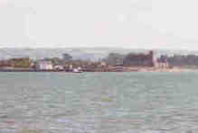

|
Have you ever stood on the old bridge of a summer evening when the full spring tide swept up to the quays, and the fishing boats swayed gently on its dark green waters ? Have you ever watched the sun setting on the old church of Abbeyside, and while you loved to see the dim ruin illuminated by its lingering glory, have you ever thought of how it has set just here every evening since those far off days when you native town was a home of peace and plenty; when workers moved in thousands through it’s busy streets and merchant ships laden with foreign freight swept proudly onto its shores and took our produce in exchange for their treasure ? |
 |
How many generations have come and gone, how many changes have passed over the Old Borough since Cromwell’s destroying armies shattered the Monastery and Castle of Abbeyside and Nano Nagle filled her cup of ale for the conquering tyrant ? There are some who may consider her action as one of cowardice for begging even the slightest favour from a cruel enemy, yet surely she must have been a brave women who could approach such a man as Cromwell with a plea for mercy on her lips, and one cannot help wondering if another Cromwell were to ride through the streets today which of us would be the first to appeal to him for the sake of our native town.
Comparisons they say are odious, and what is the use of looking back to the past either in empty pride or in vain regret for what can never be again ? But are we so sure of this, and is Dungarvan to remain for ever indifferent, its people dwindling away be emigration, its energy arrested, its trade declining, and nothing for its future inhabitants but the inevitable oblivion of a degenerate people ? No, we cannot, will not allow this to happen, and not even the gloomiest pessimist could think so who had spent a summer holiday in the Old Borough. The streets, it is true, are badly kept, the houses old and shabby, while the corn-stores on the quay a while ago echoed to the hum of busy workers are fast crumbling to ruin. The fish hawkers that once plied a vigorous trade are now few and needy, for the fish even seem to have deserted the neighbouring waters. There are no big factories and few vessels for a harbour town. Decay seems slowly creeping everywhere. Yet with all this we know there is life and hope and promise for the coming generations of Dungarvan. Life there is in the fervent glowing faith which is still there own, unshaken by long sorrow and persecution, and now emerging strong in its knowledge of the truth which shall never fade from the Irish race. Life and hope there is, too, in the young men and women of the town, with the vigour of health and the bloom of health about them, and in the rosy cheeked, happy children who flock out of school every evening - careless, glad, merry, with bright eyes and sweet faces and graceful young limbs hurrying homeward. What town, indeed, would not be proud to possess them ?
Now, walk down the Main street and on to the little park over the sea and what will you find there on this glorious summer afternoon ? Groups of strangers sitting on the stiff benches chatting merrily as they gaze over the placid waters that stretch to that pleasure ground of summer romance - the Cunnigar, and then beyond its sandy hills to the village of Ballingoul and the cottages at Helvick, resting under the shadow of its own fair headland. Nothing much, you may say, in all this. No tall mountains and green valleys between, no bold rocks and sandy coves, nor bits of wild scenery to charm the artistic fancy. Only the great blue sea flowing out to the great wide ocean - behind is the little town surrounded by hills of varying purple and golden colours, a park with ill-kempt grass, with no scent of flowers nor waving of noble trees, looking on one side of to an old ruined abbey and on the other to a long grassy peninsula with a tiny fishing hamlet beyond it, at our feet the murmur of the waves, above us a grey or blue sky according to the fickle mood of the weather, and yet why does the tide of summer visitors increase year by year, and what is the charm that brings them to this quiet unfashionable resort ? Perhaps its very quietness holds the attraction or the perfect freedom which the reign of summer seems to bring to Dungarvan, or it may be the pleasure of crossing in those sturdy rowing boats and trying a hand at one of the oars, or learning to swim in the easy calm waters near the shore, or is it the devotion of morning Mass or evening service in the Friary Chapel, or the magic of the band promenade in the tiny park, or the pleasant ways of the townspeople and their soft speech with so many expressions borrowed from the language they have done their best to disregard ? Or is it all these things together that makes Dungarvan such a successful watering place ? I know not indeed what the answer may be for strangers but if you who are natives wish to solve the riddle you must go away a while to live in exile and then come back in the midst of summer. Walk through the town down to the sea with you eyes and ears and heart open for all they are seeking. Look across the heaving waters and see the beauty that summer showers alike on ruined castle and purple-sided hill, breath long and deeply of your grand native air, listen to the voices of the sea and the wind, and to those of the children and men and women around you, and now do you not feel at last the magic irresistible charm that lurks by every stone and breathes through every sound and lives in every heart within Dungarvan.
Return to Dungarvan Memories